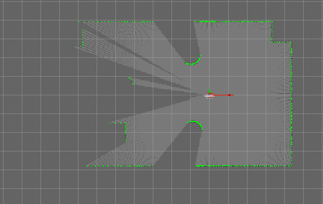
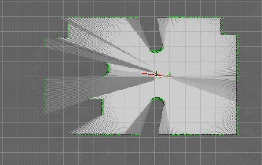
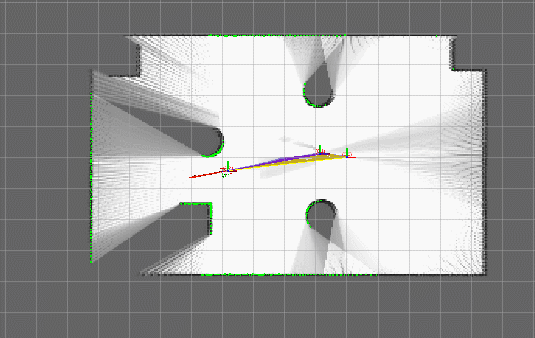

7.4.2 SLAM实现之cartographer
1.cartographer简介
cartographer是Google开源的，可与ROS集成的，可跨多平台和多传感器配置提供2D和3D实时SLAM 的系统实现。
安装命令
sudo apt-get install ros-melodic-cartographer*
cartographer安装也可参考官网安装方式，链接:https://google-cartographer-ros.readthedocs.io/en/latest/compilation.html#building-installation
2.cartographer节点说明
cartographer功能包中的核心功能包是:cartographer_ros，cartographer_ros的核心节点是:cartographer_node，为了方便调用，需要先了解该节点订阅的话题、发布的话题、服务以及相关参数。
官方文档链接:https://google-cartographer-ros.readthedocs.io/en/latest/ros_api.html
2.1订阅的Topic
定位与建图依赖于深度信息，cartographer_node可以订阅以下三个话题的消息，使用时至少提供其中之一，不过这些话题是互斥的。
scan (sensor_msgs/LaserScan)
- 支持2D和3D（例如，使用轴向旋转的平面激光扫描仪）。如果在Lua配置参考文档中将num_laser_scans设置为1，则本主题将用作SLAM的输入。如果num_laser_scans大于1，则将使用多个编号的扫描主题（例如，scan_1，scan_2，scan_3…直至num_laser_scans并包括在内）作为SLAM的输入。
echoes (sensor_msgs/MultiEchoLaserScan)
- 支持2D和3D（例如，使用轴向旋转的平面激光扫描仪）。如果在Lua配置参考文档中将num_multi_echo_laser_scans设置为1，则该主题将用作SLAM的输入。仅使用第一个回声。如果num_multi_echo_laser_scans大于1，则将多个编号的回声主题（即echoes_1，echoes_2，echoes_3…直至num_multi_echo_laser_scans并包括num_multi_echo_laser_scans）用作SLAM的输入。
points2 (sensor_msgs/PointCloud2)
- 如果Lua配置参考文档中num_point_clouds设置为1，则此主题将用作SLAM的输入。如果num_point_clouds大于1，则将使用多个编号的point2主题（例如，points2_1，points2_2，points2_3，…直到num_point_clouds并包括在内）作为SLAM的输入。
还可以订阅其他传感器主题:
imu (sensor_msgs/Imu)
- 支持2D（可选）和3D（必需）。该主题将用作SLAM的输入。
odom (nav_msgs/Odometry)
- 支持2D（可选）和3D（可选）。如果在Lua配置参考文档中启用了use_odometry，则本主题将用作SLAM的输入。
2.2发布的Topic
scan_matched_points2 (sensor_msgs/PointCloud2)
- 点云，因为它用于扫描子图匹配。根据Lua配置参考文档，可以同时过滤和投影该云。
submap_list (cartographer_ros_msgs/SubmapList)
- 所有轨迹的所有子图列表，包括每个子图的姿态和最新版本号。
2.3服务
submap_query（cartographer_ros_msgs / SubmapQuery）
- 获取请求的子图。
start_trajectory（cartographer_ros_msgs / StartTrajectory）
- 使用默认传感器主题和提供的配置开始轨迹。可以随意指定初始姿势。返回分配的轨迹ID。
trajectory_query（cartographer_ros_msgs / TrajectoryQuery）
- 从姿势图返回轨迹数据。
finish_trajectory（cartographer_ros_msgs / FinishTrajectory）
- 通过运行最终优化来完成给定trajectory_id的轨迹。
write_state（cartographer_ros_msgs / WriteState）
- 将当前内部状态写入磁盘到filename中。如果已设置，则文件通常以〜/ .ros或ROS_HOME结尾。该文件可以用作asset_writer_main的输入，以生成资产，例如概率网格，X射线或PLY文件。
get_trajectory_states（cartographer_ros_msgs / GetTrajectoryStates）
- 返回轨迹的ID和状态。例如，这对于从单独的节点观察cartographer的状态很有用。
read_metrics（cartographer_ros_msgs / ReadMetrics）
- 返回cartographer所有内部指标的最新值。运行时指标的收集是可选的，必须使用
--collect_metrics节点中的命令行标志激活。
2.4参数
cartographer 使用 lua 配置参数，详情可参考:https://google-cartographer-ros.readthedocs.io/en/latest/configuration.html
3.cartographer使用
3.1编写launch文件
编写launch文件，可以参考cartographer_ros 下的demo相关launch文件，比如: demo revo lds.launch,复制文件内容,并修改如下:
<launch>
<param name="/use_sim_time" value="true" />
<node name="cartographer_node" pkg="cartographer_ros"
type="cartographer_node" args="
-configuration_directory $(find mycar_nav)/configuration_files
-configuration_basename revo_lds.lua"
output="screen">
<remap from="scan" to="scan" />
</node>
<node name="cartographer_occupancy_grid_node" pkg="cartographer_ros"
type="cartographer_occupancy_grid_node" args="-resolution 0.05" />
<node name="rviz" pkg="rviz" type="rviz" required="true"
args="-d $(find cartographer_ros)/configuration_files/demo_2d.rviz" />
</launch>
核心代码:
-configuration_directory $(find mycar_nav)/configuration_files //配置文件目录
-configuration_basename revo_lds.lua //配置文件
....
<remap from="scan" to="scan" /> //设置雷达topic
3.2编写lua文件
在功能包下新建 configuration_files 目录，复制 cartographer ros 下的 revolds.lua 文件，并修改内容:
-- Copyright 2016 The Cartographer Authors
--
-- Licensed under the Apache License, Version 2.0 (the "License");
-- you may not use this file except in compliance with the License.
-- You may obtain a copy of the License at
--
-- http://www.apache.org/licenses/LICENSE-2.0
--
-- Unless required by applicable law or agreed to in writing, software
-- distributed under the License is distributed on an "AS IS" BASIS,
-- WITHOUT WARRANTIES OR CONDITIONS OF ANY KIND, either express or implied.
-- See the License for the specific language governing permissions and
-- limitations under the License.
include "map_builder.lua"
include "trajectory_builder.lua"
options = {
map_builder = MAP_BUILDER,
trajectory_builder = TRAJECTORY_BUILDER,
map_frame = "map",
tracking_frame = "laser",
published_frame = "laser",
odom_frame = "odom",
provide_odom_frame = true,
publish_frame_projected_to_2d = false,
use_odometry = false,
use_nav_sat = false,
use_landmarks = false,
num_laser_scans = 1,
num_multi_echo_laser_scans = 0,
num_subdivisions_per_laser_scan = 1,
num_point_clouds = 0,
lookup_transform_timeout_sec = 0.2,
submap_publish_period_sec = 0.3,
pose_publish_period_sec = 5e-3,
trajectory_publish_period_sec = 30e-3,
rangefinder_sampling_ratio = 1.,
odometry_sampling_ratio = 1.,
fixed_frame_pose_sampling_ratio = 1.,
imu_sampling_ratio = 1.,
landmarks_sampling_ratio = 1.,
}
MAP_BUILDER.use_trajectory_builder_2d = true
TRAJECTORY_BUILDER_2D.submaps.num_range_data = 35
TRAJECTORY_BUILDER_2D.min_range = 0.3
TRAJECTORY_BUILDER_2D.max_range = 8.
TRAJECTORY_BUILDER_2D.missing_data_ray_length = 1.
TRAJECTORY_BUILDER_2D.use_imu_data = false
TRAJECTORY_BUILDER_2D.use_online_correlative_scan_matching = true
TRAJECTORY_BUILDER_2D.real_time_correlative_scan_matcher.linear_search_window = 0.1
TRAJECTORY_BUILDER_2D.real_time_correlative_scan_matcher.translation_delta_cost_weight = 10.
TRAJECTORY_BUILDER_2D.real_time_correlative_scan_matcher.rotation_delta_cost_weight = 1e-1
POSE_GRAPH.optimization_problem.huber_scale = 1e2
POSE_GRAPH.optimize_every_n_nodes = 35
POSE_GRAPH.constraint_builder.min_score = 0.65
return options
关键代码:
tracking_frame = "laser" //设置为雷达的 frame
published_frame = "laser" //设置为雷达的 frame
3.3执行
此过程于gmapping执行流程类似。
1.先启动 Gazebo 仿真环境；
2.然后再启动地图绘制的 launch 文件；
3.启动键盘键盘控制节点，用于控制机器人运动建图
rosrun teleop_twist_keyboard teleop_twist_keyboard.py
4.在 rviz 中添加组件，显示栅格地图



5.使用map_server保存地图